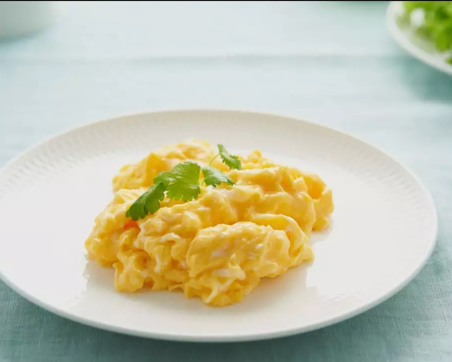

Ovos ao Creme de Leite
Delicadeza e sabor: ovos no molho de tomate com cremosidade do creme de leite!
Para o Molho de Tomate
- 2 colheres de sopa de azeite
- 3 dentes de alho picados
- 4 tomates maduros picados (ou 1 lata de tomate pelado)
- Sal a gosto
- Pimenta-do-reino a gosto
Para o Creme
- 1 caixinha de creme de leite (200g)
- 1 colher de sopa de salsa fresca picada
- Sal a gosto
Para Montar
- 4 ovos (1 por ramekin)
- 4 ramekins ou cumbucas pequenas (que vão ao forno)
Modo de Preparo
- 1 Molho de tomate: aqueça o azeite em uma panela média em fogo médio
- 2 Doure o alho por 30 segundos (até perfumar) — não deixe queimar!
- 3 Adicione os tomates e cozinhe por 5-7 minutos até ficarem bem macios
- 4 Bata o molho no liquidificador (ou use mixer) até ficar liso
- 5 Volte para a panela, tempere com sal e pimenta, e cozinhe por mais 2 minutos
- 6 Creme: misture o creme de leite com a salsa e sal em uma tigela
- 7 Pré-aqueça o forno a 180°C
- 8 Montagem: coloque 2 colheres de sopa do molho de tomate no fundo de cada ramekin
- 9 Quebre cada ovo em um prato primeiro (verifica se a gema está boa), depois deslize delicadamente no ramekin
- 10 Cubra com 2 colheres de sopa do creme de leite por cima do ovo
- 11 Leve ao forno por 10-12 minutos — a clara deve estar firme, o creme dourado
- 12 Retire, deixe descansar 2 minutos e sirva com pão italiano ou torradas
💡 Dicas do Chef
- Molho liso: bata bem no liquidificador para não ter peles de tomate
- Creme mais firme: use creme de leite fresco (não o de caixinha com conservante)
- Alternativa ao forno: faça no micro-ondas por 2-3 minutos em potência média
- Variação: adicione um fio de azeite de trufa por cima antes de servir
- Queijo extra: polvilhe parmesão ralado sobre o creme antes de levar ao forno
- Atenção: o creme de leite vai firmar no forno, criando uma camada deliciosa!
⏱️ Temporizador
10:00